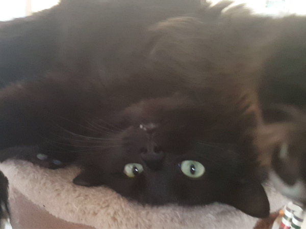
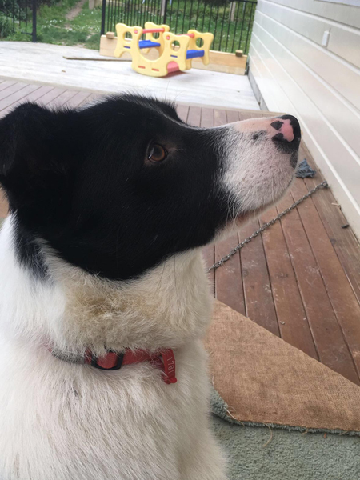
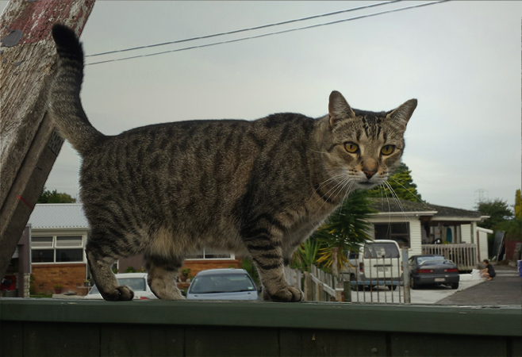
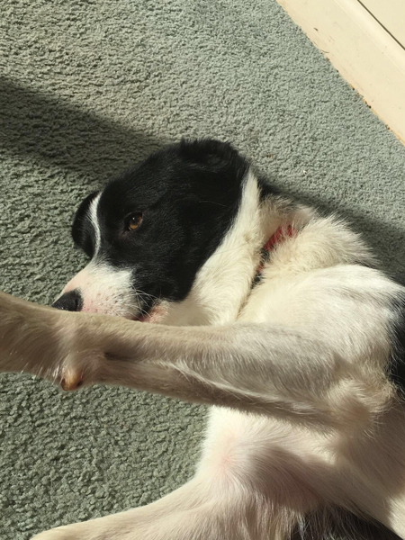
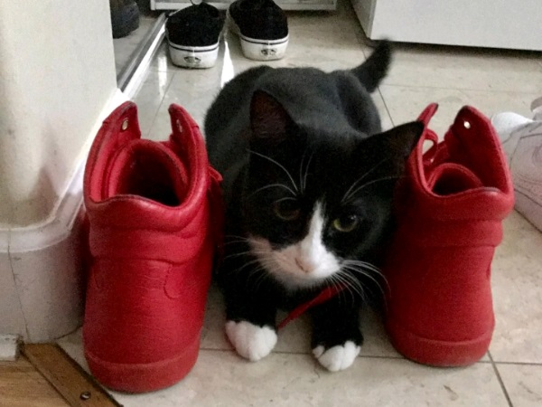
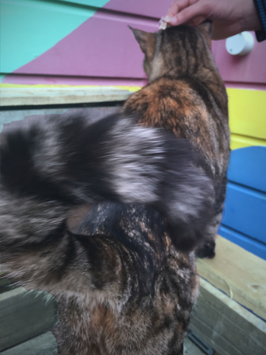
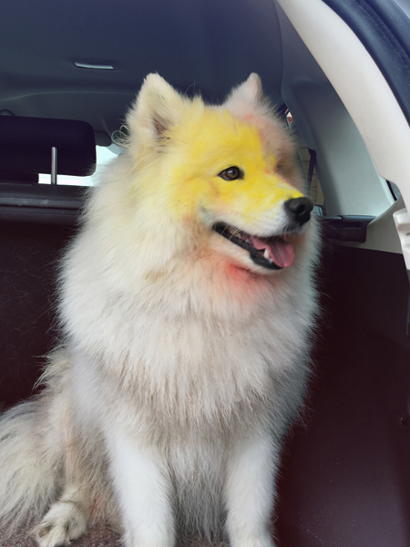
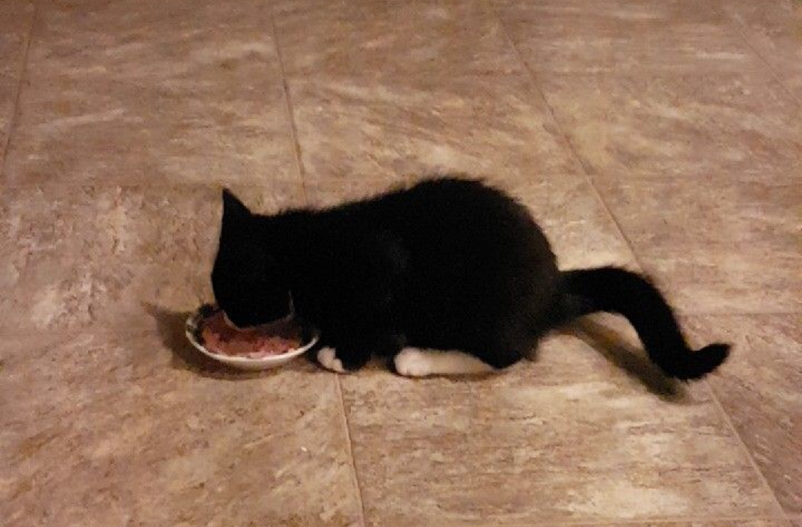

This gallery contains a variety of different pictures; it has everything from cute cats to delightful dogs playing around. It shows you what both of these types of animals do on a daily basis, and also gives you an insight to how each individual animal has their own unique personality, traits and quirks– which their humans love and adore them for!
Most of these animals are local to the Wellington region, however a few are as far away as Auckland or Christchurch!